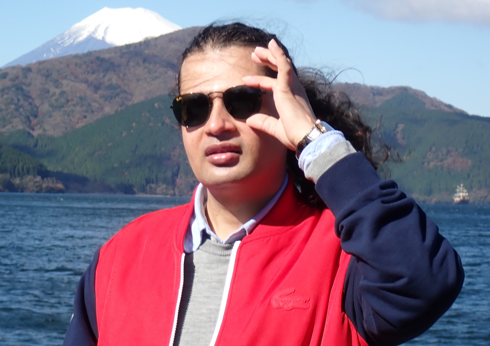

Bachelor of Science
Forestry (Ecology)
Foundations in forests, organisms, populations, plant communities, ecosystems, biodiversity, and environmental relationships.

Hello, dear visitor! Welcome to Digital Ecosphere, the personal academic and creative website of Dr. Ram C. Sharma.
Ecologist · Earth-observation scientist · Knowledge builder
Dr. Ram C. Sharma is trained as an ecologist and has developed an interdisciplinary academic career spanning environmental systems, Earth sciences, satellite remote sensing, proximal sensing, geospatial analysis, and machine learning.
Academic profile
Born and raised in the Himalayas, Dr. Sharma developed from an early age the resilience, adaptability, keen observation, ecological sensitivity, and deep respect for nature that continue to shape his scientific, literary, and public-interest work. Surrounded by mountain landscapes, forests, rivers, changing seasons, and closely connected rural communities, he learned to view nature not as a separate background to human life, but as an interconnected living system.
He began his higher education with a Bachelor of Science in Forestry (Ecology), establishing a strong foundation in organisms, plant communities, ecosystems, biodiversity, forest environments, and ecological relationships. He later earned a Master of Science in Environmental Systems, advancing his understanding of environmental processes, integrated systems analysis, and modelling.
His academic journey culminated in a Doctor of Science in Earth Sciences (Remote Sensing), through which he developed expertise in satellite remote sensing, proximal sensing, geospatial analysis, and the retrieval of biophysical and structural information from the Earth’s surface.
He subsequently undertook post-doctorate research in machine learning and artificial intelligence, focusing on their applications in Earth observation, ecological and environmental monitoring, vegetation and land-cover mapping, biophysical-parameter estimation, multi-sensor data integration, and large-scale geospatial modelling.
His work brings together high-volume data from multiple satellite technologies, ecological knowledge, spatial analysis, and intelligent computational methods. It seeks to transform complex observations into meaningful information about ecosystem structure, environmental change, ecological pressure, and the interconnected challenges facing humanity.
Verified public links
Explore Dr. Sharma’s researcher identifiers, publication profiles, and scholarly-community records.
Educational pathway
Each stage broadened the focus—from living systems and environmental processes to Earth observation, geospatial intelligence, machine learning, and artificial intelligence.
Bachelor of Science
Foundations in forests, organisms, populations, plant communities, ecosystems, biodiversity, and environmental relationships.
Master of Science
Environmental processes, integrated assessment, systems analysis, modelling, interactions, and the interpretation of complex change.
Doctor of Science
Satellite and proximal sensing, biophysical retrieval, vegetation structure, geospatial analysis, and data-driven Earth science.
Post-doctorate Research
Artificial intelligence for Earth observation, ecological monitoring, land-cover mapping, multi-sensor integration, and large-scale geospatial applications.
The planetary living system
The ecosphere is the integrated planetary domain in which life exists and interacts with the physical environment. It includes the biosphere and its continuous exchanges with the atmosphere, hydrosphere, cryosphere, and geosphere.
It is more than a collection of species. It is a coupled system of organisms, climate, air, water, soil, rock, energy, nutrients, and human activity. A change in one sphere can propagate through the others, which is why ecological and environmental problems must be understood as connected system problems.
A multidisciplinary knowledge platform
Digital Ecosphere is not presented as a single, formally standardized academic discipline. It is Dr. Sharma’s interdisciplinary platform for observing the Earth, interpreting complex data, understanding society, and communicating knowledge across scientific and cultural boundaries.
Ecosystems, biodiversity, vegetation, land, water, climate, and environmental change.
Satellite remote sensing, proximal sensing, field observations, multi-sensor data, and mapping.
GIS, spatial analysis, modelling, visualization, scale, patterns, and place-based understanding.
Machine learning, deep learning, data integration, pattern recognition, and computational interpretation.
Socio-economy, environmental policy, resilience, development, justice, and human–environment relations.
Psychology, identity, language, history, poetry, creativity, and the cultural meaning of change.
Governance, international relations, conflict, cooperation, technology, and shared planetary challenges.
Research communication, open learning, digital publishing, visual storytelling, and global dialogue.
Disciplinary architecture
No single conventional department fully contains Digital Ecosphere. Its structure is best understood through four connected layers.
Provides the broad framework for understanding the atmosphere, biosphere, hydrosphere, cryosphere, geosphere, and their interactions.
Connects natural processes with human activity, institutions, development, resilience, environmental pressures, and possible solutions.
Supplies the satellites, sensors, spatial methods, artificial intelligence, machine learning, models, and visualization tools.
Extends environmental knowledge into socio-economy, psychology, politics, global affairs, culture, history, literature, and public understanding.
Scope
Digital Ecosphere follows a connected knowledge pathway rather than treating disciplines as isolated compartments.
Satellites, sensors, field data, images, texts, and social information.
Ecological, geospatial, technological, social, historical, and cultural evidence.
Machine learning, modelling, comparison, interpretation, and critical reasoning.
Patterns, processes, causes, consequences, uncertainties, and human meaning.
Research articles, maps, visual media, essays, poetry, education, and public dialogue.
Knowledge that supports environmental awareness, responsible technology, social understanding, and a sustainable future.